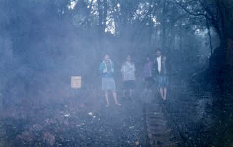
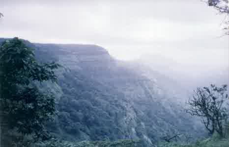
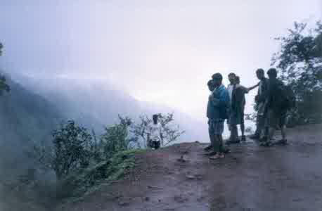
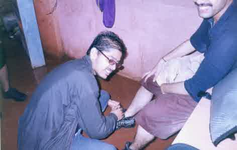
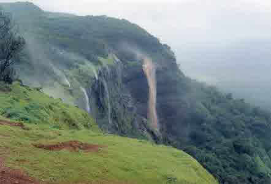
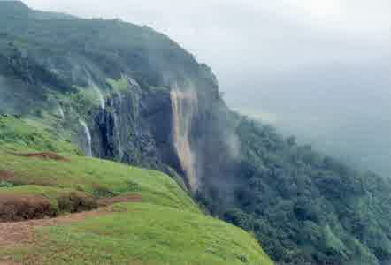
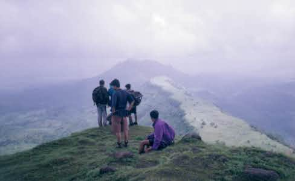
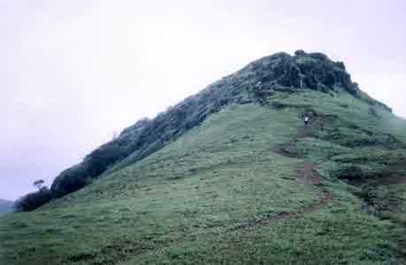
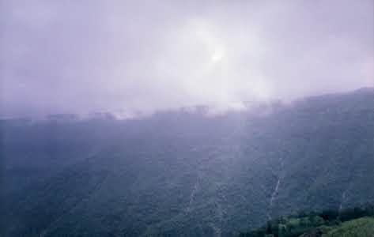
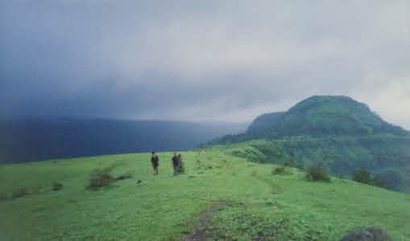

|  |
| On the way to Matheran village. It was terribly fogy with very low visibility. The narrow gauge rail track was put up by the British as they found an ideal retreat in Matheran. Though it is much smaller than the track at Dehradoon, it is none the less a feat of engineering. |
|  |
| Garbett Point on the way to Matheran village. |
|  |
| Clouds moving up... |
|  |
| 'Mathre' caught in a compromising position {grin} |
|
| From Echo point |
 |
| From Echo point - Lucas point at the left |
|  |
| Observe the smaller waterfalls... They were being completely blown back due to the extremely stiff wind. It was difficult even to keep your balance. |
|  |
| ummm... some gusts even blew part of the bigger waterfall up |
|  |
| Garbett point. Preparing to get down... |
|  |
| That rock face was slippery as hell. It was Vishu's first trek and it was a tough ask for him. But he made it. |
|  |
| The great Matheran plateau rose above to our left. Completely shrouded in clouds. |
|  |
| Fantastic conditions. |